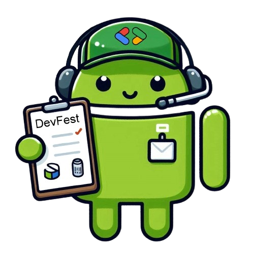

軟體工程師 MBTI 風格測試
嘿，準備好來場輕鬆有趣的自我探索了嗎？我們知道你的腦袋裡藏著無數的代碼和奇思妙想。來試試這個迷你版
MBTI 測試吧！看看在 Devfest 2024
這個派對裡，你會是什麼樣的獨特存在。別擔心，這不是什麼嚴肅的心理評估，而是幫你在人群中找到志同道合的「碼友」。選出最符合你的選項：
你的 MBTI 類型是：

0
0
0
0
#謹慎
#組織
#專注
#邏輯
#富同情心
你是社群中的可靠貢獻者。你注重細節，善於系統性地解決問題。在團隊中，你的貢獻總是精確且有價值。